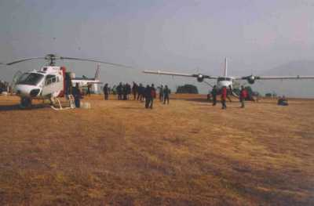
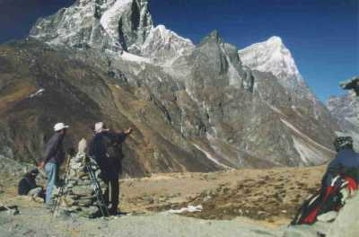
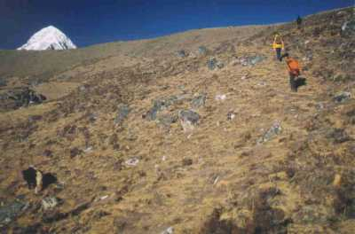
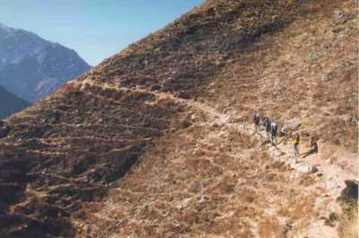
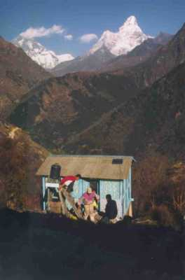
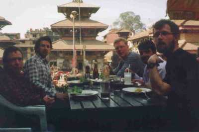

| Home | Kontakt | Steckbrief |
| Wandern/Trekking |
| Klettern/Klettersteige |
| Kanu |
| Fahrradtouren |
|
| Rucksack-Reisen |
| Touren mit Kindern |
| Wissenswertes |
Reisetagebuch Nepal - Kala Pathar Lodgetrekking vom 26.01.02 bis 11.02.0226.01.01Um 17:14 bin ich in Duisburg mit dem IC Richtung Frankfurt Flughafen losgefahren. Zum Flugticket nach Nepal gehört ein Rail & Fly Ticket, sodass sich die Anreise per Bahn empfahl. Am Abflugschalter in Frankfurt lernte ich dann die anderen Teilnehmer kennen. Sechs weitere Mutige scheuten nicht davor zurück im Winter nach Nepal zu fahren. Eigentlich sollte der Flieger um 23:00 Uhr abheben. Um 00:20 Uhr tat er es dann auch.27.01.01Mit einer Stunde Verspätung um 16:00 Ortszeit sind wir in Kathmandu gelandet. Die Zeitverschiebung zu Deutschland beträgt +4h45min. Nach den notwendigen Visaangelegenheiten, die sich ohne weiteres im Flughafen erledigen liessen, sofern man ein Paßbild und 30US$ zur Hand hatte, lernten wir außerhalb des Flughafengebäudes unseren Reiseleiter Hari Gautam kennen. Ein Kleinbus brachte uns zum Hotel und nach einem kurzen Stadtbummel und einem gemeinsamen Abendessen ging es um 22:00 Uhr ins Bett.28.01.01Um 4:15 piepte meine Uhr und riß mich aus dem Schlaf. Normalerweise ist dies eher eine Zeit, um nach Hause zu kommen. In der Dusche gab es nur eiskaltes Wasser, womit sie für diesen Morgen ausfallen mußte. Bin eben doch ein Warmduscher. Apropo Wasser. Jedes nicht abgekochte Wasser sollte man in Nepal unbedingt mit chemischen Wasserreinigern behandeln, um sich vor längeren Aufenthalten auf gewissen Örtlichkeiten zu schützen. Nach einem spärlichen Frühstück ging es per Kleinbus zum Flughafen, von wo uns eine zweimotorige Twin Otter von Yeti Airlines zum Flugplatz Lamidanda bringen sollte. Wechsel von der Twin Otter in den Helikopter am Flugplatz Lamidanda Ein direkter Anflug nach Lukla war leider wegen Renovierungsarbeiten der Piste dort nicht möglich. Ein Yeti Mitarbeiter ließ sich nur mit Mühe/Bestechungsgeld davon abbringen, unser Gesamtgepäck (Seetasche plus Handgepäck) auf 10kg zu beschränken. Seine Filme sollte man in nepalischen Flughäfen tunlichst nicht durchleuchten lassen, da die dortigen Geräte größtenteils nicht filmsicher sind. Nach einigen Stunden Wartezeit auf die Mindestsichtweite von 3km hatten wir dann um 10:00 Uhr endlich abgehoben. Nach 40 Minuten Flug sind wir in Lamidanda gelandet, wo es nach wenigen Minuten per Helikopter Richtung Lukla (2800m) weiter ging. Landebahn in Lukla, die wegen Wartungsarbeiten für Flugzeuge gesperrt war Beim Anflug auf Lukla sahen wir am Rande der Piste ein verunglücktes Flugzeug, dem bei der Landung ein Reifen geplatzt war. Der Erfahrung des Piloten war es zu verdanken, dass keiner der Fluggäste zu Schaden kam. In Lukla gab es zur Stärkung erst einmal Dhal Bat. Bei diesem nepalesischen Nationalgericht handelt es sich um Reis mit variierendem Gemüse und einer Linsensoße. Dort lernten wir auch unsere Begleitmannschaft für die nächsten Tage kennen. Neben Hari werden uns ein Sherpa, ein Sherda, ein Träger und zwei Tragetiere inklusive Treiber begleiten. Von Lukla ging es dann erst einmal leicht bergab zum Kusum Fluß (2550m). Typischer Träger, der ca. 85kg Lebensmittel in höherliegende Ortschaften trägt Der Weg ging dann weiter zum Dudh Kosi (Milchfluß) und dann stromaufwärts bis nach Phakding (2650m), wo wir unsere erste Lodgeübernachtung hatten. Der Dudh Kosi Die Schlafräume der Lodges sind unbeheizt und mit matratzenbelegten Holzpritschen ausgestattet. Zu dieser Jahreszeit waren kaum andere Trekker unterwegs, sodass wir meist die einzigen Gäste in den Lodges waren. Der Raum in dem die Mahlzeiten eingenommen wurden, verfügt meistens über einen kleinen Ofen, der je nach Höhe mit Holz oder Yakdung betrieben wird. 29.01.01Nach einem Frühstück, bestehend aus unterschiedlich zubereiteten Eiern, Zapati (Fladenbrot), Toast oder Müsli, ging es ab 08:00 weiter nordwärts entlang des Flusses, der über abenteuerliche Drahtseilbrücken mehrmals überquert wird.Eine der zahlreichen Hängebrücken über den Dudh Kosi In Jobsale haben wir mittags eine Rara Nudelsuppe gegessen. Kurz danach erreichten wir den Polizei Checkposten, der am Eingang zum Sagarmatha Nationalpark die Trekking Gebühr von 1000 Rupien erhebt. Eingang zum Sagarmatha Nationalpark Sagarmatha ist das Sherpa Wort für den Mount Everest und bedeutet soviel wie Kopf der Welt. Also haben die Sherpas schon vor genauen Vermessungen gewußt, dass der Everest der höchste Berg der Erde ist. Ein weiterer der zahlreichen Träger Nach weiteren 3.5 Stunden entlang des Flusses kamen wir zum Zusammenfluss von Nangpo und Imja zum Dudh Kosi (2850m). Wir überquerten die Stahlbrücke über die Imja Schlucht, die von Schweizern gebaut wurde und auch Hillary Bridge heißt. Hillary Bridge und die Rampe nach Namche Bazar Direkt nach der Brücke geht es in etwa 2 Stunden steil den Berg hinauf zum Sherpa Zentrum Namche Bazar (3450m). In Namche sollte man unbedingt das Geschäft des deutschen Bäckers Herbert Helmers besuchen und den Apfelkuchen probieren. Nachdem wir unsere Lodge bezogen haben sind wir noch ein wenig bergauf zu einem Aussichtspunkt (Mendaphu Hill) in der Nähe des Parkmuseums gegangen. 
Blick vom Aussichtspunkt oberhalb Namche Bazar auf den wolkenverschleierten Everest Dort besteht zum ersten Mal ein Blick auf mehrere Khumbu Gipfel wie Everest, Lhotse, Taboche und Ama Dablam. In Namche Bazar hat man zum letzten Mal die Möglichkeit Emails zu versenden, Ausrüstung zu kaufen und Bankgeschäfte zu erledigen. Die gesamte Gruppe inklusive Sherpa. Die beiden linken Teilnehmer muß ab 4300m aufgeben Ab Namche Bazar sollte man auf Anzeichen der Höhenkrankheit achten, denn die Höhendifferenz der letzten beiden Schlafhöhen (800m) ist nicht ohne. Meine Nacht in Namche Bazar war zumindest sehr kurz und es stellten sich auch erste Kopfschmerzen ein. 30.01.01Nach einer Aspirin zum Frühstück ging es morgens von Namche aus über einen wunderschönen Weg durch Kiefernwälder und an zahlreichen Manimauern entlang, an denen man immer links vorbei gehen sollte. Mittags haben wir dann unsere obligatorische Rara Nudelsuppe in der Lodge eines Sherpas eingenommen, der schon einmal mit zwei Japanern auf dem Everest war.Der Sherpa, der zwei Japaner auf den Gipfel des Everest geführt hat Interessant am Gipfelfoto in seiner Hütte ist, dass seine Gäste mit Sauerstoffmasken auf dem Gipfel stehen, während man ihn (gequält) lächeln sieht. Nachmittags erreichten wir Thame auf einer ehemaligen Grundmoräne in 3800m Höhe. Auf dem Weg nach Thame Nach Norden verläuft ein historisch bedeutsamer Handelsweg über den 5716m hohen Nangpa La nach Tibet. Noch heute findet über den Pass ein kleiner Handelsverkehr mit Yak Karawanen statt. In Thame gibt es ein kleines von Österreichern gebautes 600 kW Wasserkraftwerk, das die ganze Region mit Strom versorgt. Abends haben wir noch die oberhalb des Ortes in 3960m Höhe liegende Gompa besichtigt. Hari hat uns dort in die Geheimnisse des Buddhismus eingeweiht. Nachts habe ich dann wegen Kopfschmerzen und Reizhusten nur 4 Stunden geschlafen. 31.01.01Auf dem gleichen Weg ging es zurück Richtung Namche Bazar. An diesem Tag herrschte starker Wind, so dass wir viel Staub schlucken mußten.Rast nach staubigem Rückweg von Thame Richtung Namche Bazar Kurz vor dem Ort bogen wir allerdings links ab auf den Höhenweg nach Syangpoche.Dort aßen wir mittags unsere obligatorische Nudelsuppe. In Syangpoche befindet sich die höchste Flugpiste Nepals, die mit STOL (Short Take Off Landing) Flugzeugen frequentiert wird. Von der Flugpiste sind es ca 20 Minuten bis zum Everest View Hotel, wo wir auf der Terasse einen Kakao tranken. Leider kein view auf den Everest von der Terasse des dekadenten Everest View Hotel Der Everest war allerdings wegen der fortgeschrittenen Stunde ständig von Wolken umgeben. Vom Hotel, das über unter Überdruck zu setzende Zimmer verfügt, sind wir in 40 Minuten nach Khumjung (3800m) gegangen, wo wir uns in unserer Lodge eine improvisierte warme Dusche gönnten. Blick auf Khumjung Abendlicher Blick aus Khumjung auf den Ama Dablam In Khumjung gibt es die höchste Bäckerei der Erde, die hervorragende Bagels backt. 01.02.01Während die vergangenen 3 Tage der Akklimatisierung dienten, ging es ab jetzt weiter bergauf. Morgens besuchten wir erst in Khunde oberhalb von Khumjung das Hospital von Sir Edmund Hillary.Kunde Hospital Dort stand uns der Ehemann, der derzeit dort Dienst habenden neuseeländischen Ärztin, für unsere Fragen zur Verfügung. In der naheliegenden Gompa haben wir uns von einer alten Frau gegen eine kleine Spende einen angeblichen Yetiskalp zeigen lassen. Gompa, in der gegen ein geringes Entgeld einen Blick auf den Yetiskalp gewährt wird Hillary hat aber schon vor Jahren in England nachweisen lassen, dass es sich um eine Fälschung handelt, aber Glaube versetzt Berge (und bringt Geld). Wir verlassen Khunde Richtung Tengboche Von dort wanderten wir hinab nach Sanasa und weiter hinunter in die tiefe Imja Kosi Schlucht. Nach 2.5 h trafen wir im Weiler Phunki (3250m) ein. Dort gab es mittags wieder Rara Nudelsuppe mit Tee. Tee sollte man in Höhen über 3000m täglich mehrere Liter zu sich nehmen, da der Körper in diesen Höhen mehr Flüssigkeit braucht. Nach einem 2 Stunden langen Aufstieg erreichten wir den Kamm von Tengpoche (3867m). Dort bezogen wir unsere Lodge. Die Gompa von Tengboche Wir gingen noch bis zu einem Aussichtspunkt oberhalb des Ortes, von wo man einen hervorragenden Blick auf die Eisriesen des Khumbu, wie Kongde Ri, Taboche, Everest, Nuptse, Lhotse, Ama Dablam, Kang Taiga und Tramserku hat. Danach sind wir noch in das neben der Gompa gelegene Informationszentrum gegangen, wo man sich für 100 Rupien einen Informationsfilm über Tengpoche, die Gompa und die buddhistischen Mönche ansehen kann. Es ist schon ein etwas merkwürdiges Gefühl in dieser Abgeschiedenheit vor einem Sony-Großbildfernseher zu sitzen, aber der Film war sehenswert. 02.02.01Morgens haben wir die nach dem Brand von 1989 wieder aufgebaute Gompa besichtigt. Von Tengpoche ging es erst wieder bergab bis zur Brücke über den tief eingeschnittenen Imja Kosi und dann bergauf nach Pangpoche (3985m).Man sollte entgegenkommenden Yaks eine gesunde Zurückhaltung an den Tag legen und ausweichen Dort besuchten wir die 350 Jahre alte Gompa. Am Nachmittag folgten wir den Hangweg zur Brücke über den Imja Kosi (4135m) und erreichten nach kurzem Aufstieg Dingpoche, das mit 4350m Höhe höchst gelegenste dauerhaft besiedelte Dorf im Khumbu Gebiet. Warntafeln zur Erklärung der Höhenkrankheit kurz vor Dingboche Während uns die Höhe zu schaffen machte und wir zur Akklimatisierung noch 150m einen Kamm hochgingen, spielte die Dorfjugend unbekümmert Volleyball. Dorfjugend beim Volleyballspiel auf 4300m Höhe 03.02.01Zwei Teilnehmer unserer Gruppe mussten in Dingpoche wegen massiver AMS (Acute Mountain Sickness) aussetzen. Sie wollten uns nach einem zusätzlichen Akklimatisierungstag folgen, mussten dann aber wegen anhaltender Probleme weiter absteigen und sich sogar nach Kathmandu ausfliegen lassen. Leider bestand dadurch unsere Begleitmannschaft nur noch aus 3, anstatt 5 Leuten. Unser Träger und der Sherda begleitete die beiden Kranken. Der Kamm oberhalb von Dingboche Wir gingen von Dingpoche über eine oberhalb des Ortes gelegene Hochebene bis nach Dugla (4620m), wo wir mittags wieder Nudelsuppe zu uns nahmen. Die Hütte in Dugla Jetzt ging es über die alte Moräne steil aufwärts bis zu den Gedenkschreinen für verunglückte Bergsteiger undSherpas (4850m).  Steigung auf die Endmoräne des Khumbu Gletschers von Dugla nach Lobuche Dort steht auch ein Gedenkstein für Scott Fischer. Weiter ging es leicht ansteigend in einer Mulde zwischen den Lobuche Bergen und der Khumbu Seitenmoräne bis zu den einfachen Lodges von Lobuche (4930m). Wir übernachteten allerdings nicht in Lobuche sondern gingen noch etwas weiter bis zu einem Wegweiser, der nach links zur Everest 8000 Lodge zeigte. Entgegen der angegebenen 4 Minuten brauchten wir 15 Minuten, bis wir eine spitze Glaspyramide sahen. 
Unsere Lodge in 5050m Höhe mit italiänischer Forschungsstation und Pumori im Hintergrund Es handelt sich dabei um eine italienische Forschungsstation. Die zugehörige Lodge ist eigentlich um diese Jahreszeit geschlossen, wurde aber für uns geöffnet. Eine Übernachtungs dort oben in 5050m Höhe kostet 30US$ aber man erhält dafür wenigstens minimalen Komfort. Privat würde ich mir allerdings eine der Lodges in Lobuche nehmen oder bis nach Gorak Shep durchgehen. Die zwei Lodges in Gorak Shep sind allerdings von unterstem Niveau und sehr kalt und zugig. Vor dem Abendessen sind wir noch über einen naheliegenden Grat 200m höher aufgestiegen und bis zum Sonnenuntergang zur Akklimatisierung dort verblieben. 04.02.01Um 06:00 Uhr sind wir aufgebrochen Richtung Gipfel des Kala Pathar. Es war schon hell und so ging es ohne Lampen aber trotzdem warm eingepackt los. Über die Endmoräne des Changri Nup Gletschers ging es mehrmals auf und ab bis zur Hochalm Gorak Shep (5200m).Auf dem Weg nach Gorak Shep. Unten zu sehen. Dahinter der Kala Patar (5545m) und Pumori (7165m) Ab Gorak Shep muß man sich entscheiden, ob man zum Kala Pathar oder zum Everest Base Camp geht. Zu dieser Jahreszeit ist das Base Camp aber faktisch nicht vorhanden. Über einen ausgetrockneten See ging es bis zum Fuß des Kala Pathar. Für die letzten Meter bis zum Gipfel (5545m) brauchte ich wegen der dünnen Luft weitere 2 Stunden und so stand ich um 11:00Uhr auf dem Gipfel. In dünner Luft. Mein persönliches Gipfelfoto mit Pumori im Hintergrund Mit Hari und Jürgen auf dem Gipfel. Es war schweinekalt. Beeindruckend ist nicht nur die Nähe zum Everest (10km Luftlinie) und zum Nuptse Grat, sondern auch der Tiefblick auf die Eiswelt des Changri und des Khumbu Gletschers mit dem Bereich des Everest Base Camps in der Ferne. Der Everest mit dem Eisfall. Am linken Rand wird normalerweise das Basecamp errichtet. Da es auf dem Gipfel sehr windig war, sind wir nach einigen Fotos schnell wieder abgestiegen. In Gorak Shep gab es dann noch schnell die obligatorische Nudelsuppe. Der Rückweg von Gorak Shep zur Lodge erschien dann unendlich lang, da wir alle schon ziemlich fertig waren. Der lange Khumbu Gletscher, an dessen rechter Seite der Rückweg liegt. Gegen 15:00 Uhr waren alle zurück in der Lodge. 05.02.01Auf der Aufstiegsroute ging es zurück nach Dughla. Von dort wählten wir einen anderen Weg über das Hochtal nach Pheriche (4200m), wo wir zu Mittag gegessen haben. In diesem Ort befindet sich das höchstgelegene Hospital der Region. Wir passierten einen kleinen Pass und wanderten über einen Talweg hinab nach Pangpoche. In Pangpoche haben wir beim örtlichen Lama übernachtet, der abends mit uns über Buddhismus und Wiedergeburt diskutierte. Unsere kritischen Fragen hat er mit Seelenruhe beantwortet. Am nächsten Morgen hat er uns nach einem Gruppenfoto mit den besten Wünschen verabschiedet.Gruppenbild mit Lama 06.02.01Dieser Tag sollte eigentlich als Reservetag und falls bis dahin noch nicht aufgebraucht zur Besteigung des Taboche Vorgipfels dienen. Nach kurzer Diskussion verzichteten wir aber auf diesen zweiten Gipfelerfolg und entschieden uns lieber für einen längeren, aber schöneren Rückweg. Über einen sehr schönen Höhenweg in 4000m Höhe ging es zum Terassendorf Phortse. Höhenweg nach Phortse Der Weg ging steil hinunter zu einer Brücke (3550m) und danach wieder steil empor bis Mon La (3973m). Es ging dann leicht bergab bis nach Sanasa. Dort übernachteten wir in einer Lodge, wo wir mal richtig duschen konnten. Die Dusche war ein kleines Gewächshaus, das von drei Seiten mit einem Sichtschutz versehen war. Durch die vierte Seite hatte man einen wunderbaren Blick über das Tal und auf den Ama Dablam.  Die geilste Dusche der Welt 07.02.01Weiter ging es über den Höhenweg bis nach Namche Bazar. Dort hatten wir die Möglichkeit das bei unserem Hinweg geschlossene Museum zu besuchen.Ankunft in Namche Bazar In Namche konnten wir natürlich nicht an dem Bäcker vorbei gehen, ohne ein weiteres Stück Apfelkuchen zu probieren. 
Namches Cyber Cafe, von dem wir unsere Erfolgsmails verschickt haben Wir gingen dann die Rampe hinunter zur Hillary Bridge und weiter aus dem Sagarmatha Nationalpark hinaus bis nach Benkar zur Waterfal View Lodge. Zurück über die Hillary Bridge Da wir dort wieder unterhalb 3000m waren haben wir abends zum ersten Mal zusammen mit den Sherpas das ein oder andere Bier geleert. Insgesamt ware es dann 21 der nepalischen 0.63 Liter Flaschen. Am nächsten Morgen einigten wir uns darauf, dass unser Unwohlsein mit dem Essen dort zusammenhängen müsse. Gewagte Konstruktionen auf dem Weg nach Benkar 08.02.01In Benkar aufgebrochen und bis Lukla gegangen.In den Straßen von Lukla Dort haben wir uns abends in unserer Lodge Khumbu Resort von unserer Begleitmannschaft bei einer kleinen Feier verarbschiedet. Einige nicht mehr benötigte Ausrüstungsgegenstände haben wir unter den Helfern verlost und jeder erhielt ein reichhaltiges Trinkgeld. 09.02.01Um 07:00 morgens weckte uns ein russischer Lastenhubschrauber, der vom nahegelegenen Flugplatz abhob.
Spielende Kinder auf dem Flugplatz von Lukla Nach dem Frühstück gingen wir zum Flugplatz, wo unser Helikopter gegen Mittag erschien. Er brachte uns nach Lamidanda, wo uns die zweimotorige Twin Otter von Yeti Airlines zurück nach Kathmandu brachte. Gegen 15:00 waren wir wieder im Hotel Harati in Kathmandu. Nach zweistündigem Stadtbummel sind wir typisch nepalisch Essen gegangen und haben ein kleines Kulturprogramm genossen. Der angebotene Raki brannte allerdings nicht nur in der Speiseröhre, sondern auch auf unseren sonnenverbrannten und aufgesprungenen Lippen. 10.02.01An diesem Tag haben wir eine ganztägige Stadtführung unternommen.Der Monkey Temple in Kathmandu Mit einem Kleinbus hat uns Hari verschiedene touristische Attraktionen der Stadt gezeigt. Unter anderem Patan mit seinem restauriertem alten Königspalast und Pashupatinath am heiligen Bagmati Fluss. Der alte Königspalast in Patan Dort haben wir Leichenverbrennungen und Sadu Priester gesehen. Nach einem erlebnisreichen Tag hatten wir noch Gelegenheit abends in Thamel Souveniers einzukaufen.  Mittags in Patan Beim tibetischen Abendessen lernten wir die Teilnehmer der nächsten Tour kennen und konnten unsere gemachten Erfahrungen weitergeben. Von Hari haben wir uns mit einer kleinen Rede und reichhaltigem Trinkgeld verabschiedet. 11.02.01Wir standen früh morgens um 05:00 Uhr auf und fuhren gemeinsam zum Flughafen. Unsere Gruppe stieg am internationalen Terminal aus und die neuen Teilnehmer fuhren weiter zum nationalen Counter. Wieder war zu beachten, dass man die Filme am Durchleuchtungsgerät vorbei führt. Nachdem wir unseren Flieger bestiegen hatten dauerte es aber noch 2 Stunden bis wir abhoben. Angeblich fehlten noch Passagiere. Nach Tankstopp in Dubai ging es dann weiter nach Frankfurt. Um 19:00 waren wir in Frankfurt gelandet und von da aus ging es per Zug weiter nach Duisburg. 23:00 totmüde ins Bett gefallen.Vielen Dank an Hari Gautam, der Begleitmannschaft, Hauser exkursionen und die anderen Gruppenteilnehmer für den erlebnisreichen Urlaub High altitude porter commenting his job. Climbing accidents are a major cause of death and injury amongst young sherpas. |